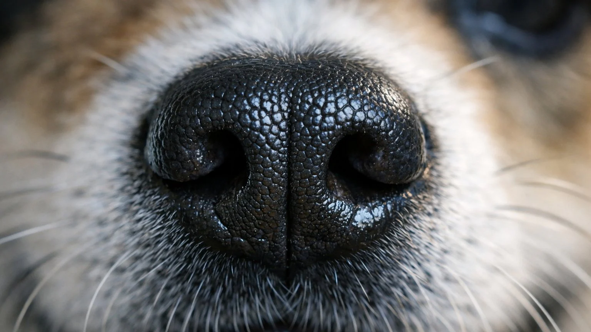

A dog's nose print is as unique as a human fingerprint.
- No two dogs have the same pattern.
- Just like humans use fingerprints for identification, some kennel clubs actually use nose prints to identify and register dogs.
- A dog's nose has up to 300 million scent receptors, compared to just 6 million in humans — making their sense of smell 50 times more powerful.